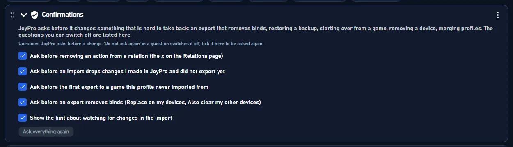

#Projektoldal
GombmegírvaElemleírás Megnyitja az összetevő hivatalos kiadási oldalát a böngészőben
Egy összetevőkártyán: a böngészőjében megnyitja az összetevő hivatalos kiadási oldalát, ahol a saját projektje bemutatja és felkínálja a letöltéseit.
A Beállítások oldal a JoyPro minden beállítását tartalmazza 25 kinyitható és bezárható részben. Egy keresőmező egy szó alapján megtalálja a beállítást ("értesítési terület", "frissítés", "fotók"), a felső lapok egy részhez ugranak, és a részeket saját sorrendbe rendezheti. Minden beállítás azonnal megmarad, és újraindítás után is megvan; nincs Mentés gomb.


Az első indításkor csak a Játékok nyílik meg; minden más egy kattintásnyira van. A legtöbb embernek csak a Játékok, a Megjelenés, a Nyelv és A JoyProról és a frissítésekről részre van szüksége.
| Szakasz | Mit állít be ott |
|---|---|
| Játékok | Mely játékai vannak, csatolt mappák, a játékkonfig-figyelő, a JoyPro által használt vJoy-eszköz |
| Kiosztások | Bemenet követése, lenyomva maradó gombok rögzítése |
| Bemutatók | Az üdvözlés, a súgó mód (F1) és minden bemutató, újrakezdéshez |
| Indítás | Az utolsó profil megnyitása indításkor |
| Oldalak az alsó sávban | Oldalak elrejtése, sorrendjük megváltoztatása |
| Nyelv | A JoyPro nyelve |
| Megjelenés | Világos, sötét vagy saját színek, szövegméret, felület mérete, témaszerkesztő |
| Futtatás a háttérben | Az értesítési területen futó segéd, amely tovább figyeli a játékait |
| Megerősítések | A kérdések, amelyeket a JoyPro egy változtatás előtt feltesz |
| A JoyProról és a frissítésekről | Verzió, projektoldal, frissítések |
| Adatvédelem | Gyártói fotók, képcsomagok, játékborítók |
| Használati statisztika | A Statisztika oldal, a leggyakrabban használt repülőgépei rangsora |
| Telemetria-rögzítés | Repülései rögzítése a Tacview-hoz hasonlóan |
| Rajzok | Hogyan rajzolja meg a JoyPro az eszközeit; az elrendezésmódosítások visszaállítása |
| Hiba jelentése | Egy zip mindazzal, ami egy probléma megtalálásához kell |
| Helyi MI | Az opcionális nyelvi modell |
| Összetevők | vJoy, HidHide, ViGEmBus és más opcionális programok |
| Eszközök | Az eszközei, a nevük, egy eszköz cseréje vagy eltávolítása |
| Parancslisták (DB) és játékútvonalak | Szakértői információk |
| DCS: alapértelmezett kiosztások | A DCS saját alapértelmezett kiosztásai a DCS-telepítésben |
| A DCS, a Star Citizen és az IL-2 parancslistái | A parancslisták szakértői frissítései |
| A játékok erővisszacsatolás-beállításai | A játékok saját erővisszacsatolási opciói |
| DCS-erővisszacsatolás: csere és megfordítás | A DCS erővisszacsatolási iránya eszközönként |


Minden olyan játékhoz egy kártya, amelyet a JoyPro támogat és Önnek megvan, a borítójával, a "Telepítve" vagy "Nincs telepítve" felirattal, a helyével, és azzal, hogy hol tárolja az irányítását.
gui.vromfs.bin és lang.vromfs.bin fájlját az összes repülőgép- és helikopterművelethez. Kikapcsolva: csak a JoyPro saját listája az általa ismert War Thunder-műveletekről.Itt semmi sem változik egy játékban. A csatolt mappa határozza meg, hol olvas és ír az importálás és az exportálás; egy rejtett játék nem kap exportálási kártyát, és nincs figyelve.


Az Ön válasza a beállítási varázsló kérdésére: Használ fejkövetést vagy VR-t? Fejkövetéssel (TrackIR, arckövető webkamera, Tobii szemkövető) vagy VR-ral a fejét fordítva néz körül.
A JoyPro összes bemutatója egy helyen (Súgó mód és bemutatók):


Az utolsó profil megnyitása indításkor (alapértelmezésben bekapcsolva) megnyitja azt a profilt, amely legutóbb nyitva volt; az elérési út alatta látható. A megjegyzés elmagyarázza a profil előzményeit: minden változtatás magától mentésre kerül, és minden mentés egy verzió az Előzmények között (felső sáv). A régi verziók ritkulnak: az utolsó nap összes verziója, utána 7 napig óránként egy, 60 napig naponta egy, azután hetente egy; legfeljebb 200 MB profilonként és összesen 1 GB. A megtartott verziók megmaradnak.


Az alsó sáv minden oldalához egy sor. Vegye ki a pipát a nem használt oldalak elől; húzzon egy sort a fogantyújánál fogva (vagy használja a nyilakat) a sorrend megváltoztatásához. Egy rejtett oldal más oldalakról továbbra is megnyílik (például A Módosítók oldal megnyitása), és amíg nyitva van, megjelenik a sávban. A Beállítások nem rejthetők el. A Visszaállítás alapértelmezésre visszahozza a JoyPro sorrendjét az összes oldallal.


A JoyPro nyelve: angol és 38 másik nyelv, vagy Windows nyelve (a Windows megjelenítési nyelve, vagy angol, ha a JoyPro nem ismeri). A fordításokat gép készíti, és furcsán hangozhatnak; a játékok parancsnevei úgy maradnak, ahogy a játék nevezi őket. Az értesítési területen futó segéd menüje követi a nyelvet.


A JoyPro csak akkor veheti észre, hogy egy játékban megváltoztatta az irányítást, ha fut. Egy apró segéd ikonként tovább figyel az értesítési területen, miután bezárta a JoyPrót; észrevehető processzorterhelést nem okoz, és néhány MB memóriát használ.


A JoyPro egy nehezen visszavonható változtatás előtt rákérdez. Az itt felsorolt kérdések kikapcsolhatók: egy művelet eltávolítása egy relációból, egy importálás, amely elveti a még nem exportált változtatásokat, az első exportálás egy olyan játékba, amelyből a profil sosem importált, egy kiosztásokat eltávolító exportálás, és a figyelőre vonatkozó tipp az importálásban. Egy kérdés, amelyet a "Ne kérdezze újra" gombbal kikapcsolt, itt bejelöletlenül jelenik meg; a Minden kérdés újra mindet visszakapcsolja.


A verzió, a build és a licencsor, a Projektoldal és a Kiadások oldala, a harmadik felek közleményei, valamint a frissítések: Frissítések keresése, Frissítés telepítése (letölti az új verziót, ellenőrzi, telepíti és újraindítja a JoyPrót), Frissítések keresése indításkor, és Felkínálás újra egy kihagyott verzióhoz. A "Honnan jönnek a frissítések (szakértőknek)" megnevezi azt a GitHub-tárolót, amelynek kiadásait a JoyPro telepíti.


A JoyPro-nak nincs fiókja és nincs telemetriája. Csak frissítéskereséshez, gyártói termékfotókhoz (miután igent mondott), az ezen a gépen hiányzó játékborítókhoz, az opcionális MI-modell letöltéséhez, opcionális illesztőprogramokhoz és egy hiányzó .NET Frameworkhöz csatlakozik az internetre.


A JoyPro feljegyzi, mely játékokat, repülőgépeket és hajókat használja, a játékok saját naplóiból és a Steam játékidejéből, és ezen a gépen tárol róla egy összesítést.


Minden kört, küldetést vagy repülést rögzít a játék által küldött összes telemetriával (helyzet, térbeli helyzet, sebességek, kormányszervek, hajtóművek, fegyverek, események), ahogy a Tacview a DCS-nél, minden olyan játékhoz, amelynek telemetriáját a JoyPro olvassa.


Hogyan rajzolja meg a JoyPro az eszközeit az Elrendezés oldalon és az eszközkártyákon (vonalas vagy cel-shaded, a JoyPro színeivel vagy a sajátjaival), külön a képernyőhöz és a puskákhoz meg az exportokhoz. Az összes elrendezésmódosításom visszaállítása... minden eszköz képét visszaállítja a JoyPro alapértelmezésére (a jelölőpozíciói, táblázatai és vonalai, átnevezett részei, fotói, saját eszközdefiníciói és a profil által használt elrendezésfájlok; maguk a fájlok megmaradnak); a közvetlenül utána használt Visszaállítás visszavonása visszahozza őket. Egyetlen eszköz: az Elrendezés oldalon a Modell... menüje. A rajzvezérlők magyarázata az Elrendezés oldalon található.


A Háttérnaplók megőrzése: n nap (alapértelmezés 30; összesen legfeljebb 200 MB) és a Naplómappa megnyitása alul található.


Opcionális. A JoyPro offline szabályai mindig működnek; egy ingyenes, nyílt forráskódú nyelvi modell ezen felül szabadon megfogalmazott mondatokat is értelmezhet a Kezelés MI-vel, a Szerkesztés MI-vel, a JoyPro segéd és a Csoportosítás leírás szerint funkcióban, és a JoyPro minden válaszát ellenőrzi. Csak akkor fut ezen a gépen, amikor használja.
llama-server.exe és a .gguf fájl elérési útja, Keresés ezen a gépen, Fájlok használata, Használat leállítása.


Az Újrakeresés kártyát mutat minden csatlakoztatott botkormányhoz, gázkarhoz és pedálhoz, valamint minden eszközhöz, amelyet a profilja használ: a képét (kattintson rá, hogy az Elrendezés oldalon megnyissa az eszközt), a nevét, hogy csatlakoztatva van-e, és hány kiosztása van.


Csak olvasható válaszok a Kimenet panelen arról, mit tud a JoyPro az egyes játékokról: DB összegzése, DB ellenőrzése, DB listája, DB játékai, DB repülőgépei, DB ujjlenyomata, Játékútvonalak, Játéklista, Játékok felismerése, játék- és repülőgépszűrővel. Ha egy frissítés után be szeretné olvasni egy játék új parancsait, használja a játék kártyáján a Kezdőlapon a Frissítés gombot.


A DCS minden eszközre ráteszi a saját alapkiosztásait. A JoyPro DCS-exportálása már eltávolítja őket minden eszközről, amelyre ír, minden repülőgépben. Az itteni két opció magát a DCS-telepítést módosítja, minden eszközre; mindkettő ki van kapcsolva, amíg be nem kapcsolja őket.
<file>.nocombo.bak néven megmarad. A UI-réteg alapkiosztásainak megtartása (menük, VR) a UI-réteget úgy hagyja, ahogy van.Ezek az opciók a DCS saját fájljait módosítják. Egyes többjátékos szerverek nem engedik be, amíg be vannak kapcsolva; a DCS-fájlok visszaállítása visszateszi a DCS fájljait. Egy DCS-frissítés vagy -javítás visszahozza az eredeti fájlokat; a JoyPro a következő indításakor újra bekapcsolja az opciót.


Egy játék listája általában a Kezdőlapon a kártyáján lévő Frissítés gombbal készül. Itt: csak néhány DCS-repülőgép, egy próbafuttatás írás nélkül, és a régi kattintásos mód.


Minden erővisszacsatolási beállítás, amelyet egy játék kínál (erősség, effektek, eszközönként és a DCS-ben repülőgépenként). A JoyPro a beállított értékeket a profilban tárolja, és exportáláskor beírja a játékba; a nem tárolt beállítások úgy maradnak, ahogy a játékban vannak. Válassza ki a Játék, az Eszköz és a Repülőgépek értékét (Minden repülőgép, vagy egy repülőgép, amelynek értékei elsőbbséget kapnak), módosítsa az értékeket, majd nyomja meg az Alkalmaz gombot. A Visszaállítás elveti a nem alkalmazott változtatásokat, egy soron a Törlés abbahagyja egy beállítás tárolását, a Törlés eltávolít minden látható tárolt beállítást. Magának a JoyPro-nak a telemetriás erővisszacsatolása az Erővisszacsatolás oldalon található.


Ha az erővisszacsatolásos botkormánya rossz irányba nyom a DCS-ben: jelölje be hozzá a Tengelycsere, az X megfordítása vagy az Y megfordítása lehetőséget, majd nyomja meg az Alkalmaz gombot. A Törlés visszaadja az eszköznek a DCS alapértelmezéseit. Egy eszköztáblázat szűrőkkel (Csak csatlakoztatott, Csak profil), kijelölőgombokkal és a Kijelölt alkalmazása / Kijelöltek törlése / Összes törlése gombokkal; a "Kézi egyeszközös (haladó)" név alapján állít be egy eszközt.
A DCS az erővisszacsatolás irányát indításkor eszközönként olvassa be: egy felcserélt vagy megfordított eszköz minden repülőgépben a másik irányba nyom.
%APPDATA%\JoyPro2\ui-settings.json (ablak, oldalak, nyitott szakaszok és sorrendjük, téma, nyelv, megerősítések, adatvédelmi válaszok, értesítési terület, helyi MI választásai ...), minden változtatáskor azonnal kiírva; a témák JSON-fájlokként mellette. Nézetmodell: MainWindowViewModel.SettingsPage.cs (szakaszok, keresés, sorrend; a SettingsSectionDefaults tartalmazza az azonosítókat, címeket és keresőszavakat), vezérlők: Views/Controls/SettingsSection.cs, SettingsSectionsPanel.cs, SettingsTabStrip.cs.engine games installs, engine games install set, engine games install disable, engine games config set parancsokon keresztül (MainWindowViewModel.GameInstalls.cs, GameSetup.cs).MainWindowViewModel.NavPages.cs; megjelenés: MainWindowViewModel.Appearance.cs, Services/ThemeService.cs; nyelv: MainWindowViewModel.Language.cs (Honosítás).MainWindowViewModel.Updates.cs (Frissítések); jelentés: MainWindowViewModel.AppServices.cs, engine support bundle (Naplózás).engine usage harvest, engine usage ranking, engine usage pin (Használati statisztika); telemetria rögzítése: MainWindowViewModel.TelemetryRecording.cs, engine telemetry sessions, engine telemetry export (Telemetria rögzítése).engine llm status, engine llm download, engine llm use-local, engine llm start (Csoportosítás természetes nyelven); összetevők: MainWindowViewModel.Components.cs (Összetevők).engine devices list, engine devices inputs, engine devices exchange, engine devices remove, engine games devices (Eszközök).engine dcs strip-defaults, engine dcs device-luas, engine dcs defaults restore (MainWindowViewModel.DcsDefaults.cs); parancslisták: engine dcs refresh id, engine dcs refresh clean, engine db refresh-starcitizen, engine db refresh-il2; a szakértői DB-válaszok: engine db summary, engine db check, engine db list, engine db games, engine db planes, engine db fingerprint, engine games paths, engine games list, engine games detect.engine ffb models, engine ffb show, engine ffb set, engine ffb clear (a profilban tárolva, exportáláskor kiírva; MainWindowViewModel.FfbSettings.cs); DCS felcserélés/megfordítás: engine dcs ffb list, engine dcs ffb set, engine dcs ffb clear.Az oldal mögötti funkciódokumentáció, a tárolóból generálva:
190 vezérlő, a program forrásából kiolvasva: 190 megírva, 0 a forrásból vett tényekkel (elemleírás, kódmegjegyzés, motorhívás), 0 még bővítendő.
Elemleírás Megnyitja az összetevő hivatalos kiadási oldalát a böngészőben
Egy összetevőkártyán: a böngészőjében megnyitja az összetevő hivatalos kiadási oldalát, ahol a saját projektje bemutatja és felkínálja a letöltéseit.
Elemleírás Javítás vagy eltávolítás: megnyitja a Windows Telepített alkalmazások listáját, ahol az összetevő saját eltávolítója található
Egy telepített összetevő kártyáján: megnyitja a Windows Telepített alkalmazások listáját.
Ott javítsa vagy távolítsa el az összetevőt a saját eltávolítójával; a JoyPro maga nem távolít el összetevőket.
Egy összetevőkártyán: a böngészőjében megnyitja az összetevő licencét a hivatalos projektoldalán.
Jelölje be, ha igent mond. Ekkor a JoyPro telepítheti a segédet.
Jelölje be, ha igent mond: a JoyPro letöltheti és telepítheti ezt az ingyenes segédet.
A Telepítés csak ezzel a jelöléssel működik.
Letölti és telepíti ezt az ingyenes segédet. Előbb be kell jelölni a négyzetet.
Letölti és telepíti ezt az ingyenes segédet: a telepítés gomb a komponens nevével.
Csak az „Elolvastam ...” jelölés után működik, ezért előbb jelölje be azt a négyzetet.
Egy összetevő letöltése közben látható: leállítja a letöltést.
A már futó telepítőt a JoyPro nem állítja le; használja a saját ablakában lévő Mégse gombot.
Elemleírás Be: egy művelet x-e előbb rákérdez: „Eltávolítja ezt a műveletet?”. Ki: azonnal eltávolítja (a Ctrl+Z visszavonja).
Be: a Relációk oldalon egy művelet x gombja előbb megkérdezi: "Eltávolítja ezt a műveletet?".
Ki: a művelet azonnal törlődik; a Ctrl+Z továbbra is visszahozza.
Elemleírás Be: a játékkártya Importálás gombja előbb rákérdez, ha a profilban vannak olyan módosítások ehhez a játékhoz, amelyek még nincsenek a játékban (Előbb exportálás, Importálás, Mégse). Ki: azonnal importál (az Előzmények visszahozzák a módosításokat).
Be: egy játékkártyán az Importálás előbb rákérdez, ha a profiljában vannak olyan változtatások ahhoz a játékhoz, amelyek még nincsenek a játékban, Előbb exportálás, Importálás és Mégse lehetőséggel.
Ki: azonnal importál; a profil Előzményei továbbra is tartalmazzák a korábbi verziót.
Be: egy olyan játék első exportálása, amelyből ez a profil még soha nem importált, megkérdezi: "Előbb importálás?", hogy a játék saját kiosztásai ne vesszenek el váratlanul.
Ki: azonnal exportál.
Be: a kiosztásokat eltávolító exportálás az írás előtt egyszer rákérdez.
Ki: azonnal ír.
Be: az importálás megmutatja a tippet, hogy a JoyPro figyelheti a játékot a játékban végzett vezérlőváltoztatásai miatt.
Ki: a tipp rejtve van.
Elemleírás Minden kikapcsolt kérdés újra feltételre kerül
Ennek a szakasznak minden kérdését újra bejelöli, így a JoyPro mostantól mindegyiket újra megkérdezi.
Csak akkor érhető el, ha legalább egy kérdés ki van kapcsolva.
Elemleírás Bekapcsolja a helyi MI-t a beállított modellel; a következő kéréssel töltődik be
A "Helyi MI" címkén az MI-műveletek mellett, akkor látható, ha egy modell be van állítva, de ki van kapcsolva: egy kattintással bekapcsolja a helyi MI-t azzal a modellel; a következő kérésével töltődik be.
Modell nélkül ehelyett a Beállítások > Helyi MI részt nyitja meg.
Elemleírás Megnyitja: Beállítások > Helyi MI: modell letöltése (előbb méret és licenc) vagy saját llama.cpp használata
A helyi MI beállítása a "Helyi MI" címkén: megnyitja a Beállítások > Helyi MI részt, és odagörget, ahol letölthet egy modellt, vagy a JoyPro-t a saját llama.cpp-jére irányíthatja.
Önmagában semmit sem változtat.
Elemleírás Azonnal leállítja a helyi MI-modellt, és felszabadítja a memóriáját (a következő kérés újra betölti)
Leállítás most, akkor látható, amikor a helyi MI-modell be van töltve: azonnal leállítja a modellt, és felszabadítja a memóriáját.
A helyi MI bekapcsolva marad; a következő MI-kérés újra betölti a modellt.
Elemleírás Be: amíg az alábbi játék fut és telemetriát küld, a JoyPro körönként, küldetésenként vagy repülésenként egy fájlt ír. Ki: semmi sem rögzítődik, és semmit sem keres.
Alapból ki. Be: amíg egy bejelölt játék fut és telemetriát küld, a JoyPro körönként, küldetésenként vagy repülésenként egy felvételt ír a lenti mappába.
Ki: semmi sem kerül rögzítésre, és a JoyPro nem keres futó játékokat.
Elemleírás Ide kerülnek a rögzítések, bármelyik meghajtón (olyan meghajtón, ahol van szabad hely: egy óra körülbelül 10-50 MB)
Mappa > Kiválasztás...: kiválasztja, hová kerüljenek az új felvételek, bármelyik meghajtón.
A Rögzített munkamenetek listája ezután annak a mappának a felvételeit mutatja; a meglévő felvételek nem kerülnek át.
Elemleírás Vissza a JoyPro adatmappájához
Akkor látható, ha saját mappát választott: az új felvételek újra a JoyPro adatmappájába kerülnek, és a lista az ottani felvételeket mutatja.
A mappájában lévő felvételek ott maradnak, ahol vannak.
Az Intézőben megnyitja a felvételek mappáját.
Elemleírás A játék saját csomagjai, válaszai és fájljai az értékek mellett, az azokat olvasó eszközöknek. Körülbelül kétszeres méret.
Alapból be: minden felvétel az értékek mellett a játék saját csomagjait, válaszait és fájljait is megőrzi az ezeket olvasó eszközök számára.
Egy felvétel ekkor körülbelül kétszer akkora.
A telemetria-rögzítés egy játéka: a bejelölt játékok rögzítésre kerülnek, amíg futnak és telemetriát küldenek.
A lenti sor megmondja, mit figyel a JoyPro annál a játéknál.
Újra beolvassa a rögzített munkamenetek listáját a felvételek mappájából.
Elemleírás Egy .zip.acmi fájl, amelyet a Tacview megnyit: az útvonal, a helyzet, a sebességek és a játék által jelentett többi objektum. Csak olyan játékokhoz, amelyek telemetriája tartalmaz pozíciót.
A kijelölt felvételt a Tacview által megnyitható .zip.acmi fájlként a felvételek melletti Exports mappába írja, és megmutatja az Intézőben.
Csak olyan játékokhoz, amelyek telemetriája tartalmaz pozíciót.
Elemleírás Egy mappa, benne egy táblázat minden értékkel pillanatonként, az események, a csatornalista és csatornánként egy kis fájl (vesszővel elválasztva, tizedesponttal).
A kijelölt felvételt CSV-fájlok mappájaként a felvételek melletti Exports mappába írja: egy táblázat minden értékkel pillanatonként, az események, a csatornalista és csatornánként egy kis fájl.
Az Intéző megnyitja a mappát.
Törli a kijelölt felvételt.
Az x a Keresés a beállításokban mezőben: törli a keresést, így újra minden szakasz látszik.
A Beállítások oldal minden szakaszát kinyitja.
A nyitott szakaszokat a következő indításra megjegyzi.
Minden szakaszt bezár, így az oldal csak a címüket mutatja; a szükségeset rákattintva nyissa ki.
A kis nyíl az Összes megnyitása / Összes bezárása mellett: a szakaszokat visszaállítja a JoyPro sorrendjére, és csak a Játékok marad nyitva.
Az új sorrend a következő indításra is megmarad.
Elemleírás Világos színek
A JoyPro azonnal világos színekkel jelenik meg.
A következő indításra is megmarad.
Elemleírás Sötét színek
A JoyPro azonnal sötét színekkel jelenik meg.
A következő indításra is megmarad.
Elemleírás A Windows beállításának követése
A JoyPro a Windows alkalmazásokra vonatkozó beállítását követi.
A következő indításra is megmarad.
Elemleírás A JoyPro megjelenítése ebben a témában
Használat egy saját témáján: a JoyPro azonnal abban a témában jelenik meg.
A következő indításra is megmarad.
Elemleírás Megnyitás a lenti témaszerkesztőben
Szerkesztés egy saját témáján: lent a témaszerkesztőben megnyitja a másolatát.
Semmi sem változik, amíg meg nem nyomja a Mentés vagy az Ennek a témának a használata gombot.
Elemleírás A téma szövegmérete vagy 100%
Visszaállítás a Szövegméret mellett: elveti a választott szövegméretet, így újra a használt téma szövegmérete érvényes, vagy 100 %, ha annak nincs ilyen.
Elemleírás Vissza 100%-ra
Visszaállítás a Felület mérete mellett: az egész ablak visszaáll 100 %-ra.
Témaszerkesztő: új témát kezd a JoyPro világos színeiből, és élő előnézettel megnyitja a szerkesztőben.
Fájlként csak a Mentés vagy az Ennek a témának a használata gombbal mentődik.
Témaszerkesztő: új témát kezd a JoyPro sötét színeiből, és megnyitja a szerkesztőben.
Elemleírás Egy témafájl (.json), amelyet valaki megosztott Önnel
Témaszerkesztő: kiválaszt egy témafájlt, amelyet valaki megosztott Önnel.
A JoyPro ellenőrzi, a témamappájába másolja, és megnyitja a szerkesztőben; a szerkesztő feletti sor megmondja, mi lett importálva, vagy miért nem.
A témaszerkesztő élő előnézetének része: egy mintagomb, amely megmutatja, hogyan néznek ki a gombok a szerkesztett témában.
Nem csinál semmit.
A témaszerkesztő élő előnézetének része: egy minta kiemelőgomb.
Nem csinál semmit.
A témaszerkesztő élő előnézetének része: egy minta letiltott gomb.
Nem csinál semmit.
A témaszerkesztő élő előnézetének része: az alsó sáv egy minta oldalgombja.
Nem csinál semmit.
A témaszerkesztő élő előnézetének része: a minta oldalgomb kijelölt állapotban.
Nem csinál semmit.
A témaszerkesztő élő előnézetének része: az alsó sáv egy minta oldalgombja.
Nem csinál semmit.
Elemleírás Világosabbá vagy sötétebbé teszi a szövegszíneket, amíg minden szöveg olvasható nem lesz
Akkor látható, ha a kontrasztellenőrzés nehezen olvasható szövegeket talál: a szerkesztett téma szövegszíneit addig világosítja vagy sötétíti, amíg minden szöveg olvasható nem lesz, és megmondja, hány szín változott.
Csak a Mentés vagy az Ennek a témának a használata gombbal mentődik.
Elemleírás Menti, és megjeleníti benne a JoyPro-t
Menti a szerkesztett témát, és a JoyPro azonnal abban jelenik meg.
A következő indításra is megmarad.
A szerkesztett témát fájlként menti a JoyPro beállítási mappájába.
Ha ez a használt téma, az ablak azonnal mutatja a változást.
Másolatot készít a szerkesztett témáról, és a másolatot nyitja meg a szerkesztőben, egy kedvelt téma változatához.
Elemleírás A téma mentése fájlként a megosztáshoz
A szerkesztett témát .json fájlként menti az Ön által választott helyre, másolatként vagy megosztáshoz; mások az Importálás... gombbal töltik be.
Elemleírás Minden szín vissza az alapul szolgáló témára, a betűtípusok pedig vissza a JoyPro sajátjaira
A szerkesztett téma minden színét visszaállítja arra a témára, amelyen alapul; a betűtípusok is visszaállnak a JoyPro-éira.
A név megmarad, és a témafájl csak a Mentés vagy az Ennek a témának a használata gombbal változik.
Törli a szerkesztett téma fájlját. Ha ez volt a használt téma, a JoyPro visszatér egy beépített témára.
Elemleírás Az első indítási beállítás: mely játékai vannak, társított mappák (hordozható telepítések) és konfigurációs helyek
Újra megkeresi a játékait, és megnyitja az első indítás ablakát: jelölje be a meglévő játékait, csatolja a hordozható telepítések mappáit, és adjon meg más konfigurációs helyeket.
Semmi sem változik, amíg ott meg nem nyomja a Kész gombot.
Újra megkeresi a játékait, például egy játék telepítése vagy áthelyezése után, és frissíti az itteni kártyákat, a Kezdőlapot és az Exportálás oldalt.
Elemleírás Ha módosít egy játékban olyan vezérlőket, amelyeket a JoyPro kezel, a JoyPro a játék bezárása után megkérdezi, átvegye-e őket a profiljába
Alapból be: ha egy játékon belül módosítja a JoyPro által kezelt vezérlőket, a JoyPro a játék bezárása után észreveszi, és megkérdezi, átvegye-e a változásokat a profiljába.
Azokat a játékokat figyeli, amelyekbe exportált vagy amelyekből importált, és amelyeket a Kezdőlapon figyelésre bejelölt.
Elemleírás Be (alapérték): a JoyPro kicsomagolja a gui.vromfs.bin és lang.vromfs.bin fájlokat (csak olvasás) minden repülőgép- és helikopter-művelethez. Ki: a JoyPro csak a saját, ismert War Thunder-műveleteinek listáját használja.
Alapból be: amikor a JoyPro elkészíti a War Thunder parancslistáját, kicsomagolja a játék gui.vromfs.bin és lang.vromfs.bin fájlját minden repülőgép- és helikopterművelethez.
Ki: a JoyPro csak a saját listáját használja az általa ismert War Thunder-műveletekről.
Elemleírás A HLL Vietnam fájljai Oodle-tömörítésűek, és a játék nem szállít saját Oodle könyvtárat. Az Ön igenjével a JoyPro azt használja, amelyet egy másik, ezen a gépen lévő játék szállít (onnan, ahol van, soha nem másolva). Ki: a JoyPro saját kontrollergomb-listája, ami az Xbox-kontroller módhoz teljesen elég.
Az Ön válasza a kérdésre, amelyet a JoyPro a Hell Let Loose: Vietnam parancslistájának elkészítésekor tesz fel: bejelölve a JoyPro a játék tömörített fájljait egy másik telepített játékkal szállított Oodle könyvtárral olvassa be, annak helyéről.
Jelölés nélkül: a JoyPro saját listája a kontrollergombokról, ami mindössze kell az Xbox kontroller módhoz.
Elfelejti a Hell Let Loose: Vietnam fájljaira adott válaszát; a JoyPro a játék parancslistájának következő elkészítésekor újra megkérdezi.
Elemleírás Ez a mappa ezután a játék telepítésének számít (a játék mappája, az indítómappa vagy a bin mappa)
Mappa kiválasztása... egy játékkártyán: csatolja a játék mappáját.
Egy indító- vagy bin-mappa is működik; a JoyPro hozzá csatolja a játék mappáját.
Elemleírás Válassza ki a játék .exe fájlját vagy indítóját; a JoyPro a játék mappájához kapcsolódik
.exe kiválasztása... egy játékkártyán: válassza ki a játék programját vagy indítóját; a JoyPro hozzá csatolja a játék mappáját, mint a Mappa kiválasztása... esetén.
Elemleírás Az Ön mappájának elfelejtése, és a játék újrafelismerése
Észlelt használata egy saját mappával rendelkező játékkártyán: elfelejti a hivatkozást, így a JoyPro újra magától ismeri fel a játékot.
A játék fájljaihoz nem nyúl.
Elemleírás Nincs meg, vagy nem érdekli: mindenhol rejtett a JoyProban (kártyák, export, figyelés, játéklisták); telepítetlennek számít. A hozzá tartozó kiosztások megmaradnak.
Elrejtés egy játékkártyán: olyan játékhoz, amely nincs meg Önnek, vagy nem érdekli.
Mindenhol el van rejtve a JoyPróban, és nem telepítettnek számít; a hozzá tartozó kiosztásai a profilban maradnak.
Elemleírás Nyomjon meg egy gombot (vagy mozdítson meg egy tengelyt nagyot), és a Kiosztások vagy Relációk oldal a hozzá tartozó relációra ugrik; nyomja meg újra a következő rá vonatkozó relációhoz, előbb a módosító nélküliek. Rögzítés vagy mezőbe gépelés közben nem.
Alapból be: nyomjon meg egy gombot, és a Kiosztások vagy a Relációk oldal a relációjára ugrik; nyomja meg újra a rajta lévő következő relációhoz, a módosító nélküliekkel kezdve.
Rögzítés vagy mezőbe gépelés közben nem, és csak amíg a JoyPro ablaka van elöl.
Elemleírás A rövid megjegyzés a lista alján (BTN 8 a WarBRD-n: Gear), miután a bemenetkövetés ugrott. A lista kikapcsolt állapotban is ugrik.
Alapból ki: miután a bemenetkövetés ugrott, a lista alján egy rövid megjegyzés megmondja, mit nyomott meg.
A lista ezzel vagy enélkül is ugrik.
Elemleírás A Rögzítés csak az állapotot váltó gombot veszi át; a rögzítés kezdetén már lenyomott gomb (egy 3 állású kapcsoló közepe, egy módkapcsoló) soha nem számít. Bejelölve: az elengedése számít annak a gombnak.
Alapból ki: a rögzítés csak állapotot váltó gombot fogad el, így a rögzítés kezdetekor már lenyomott gomb sosem számít.
Bejelölve: egy ilyen gomb elengedése annak a gombnak számít.
Elemleírás Be: a névegyezések alatt jön az Ugyanaz a funkció (ugyanaz a funkció, szinonima vagy leírás alapján találva) és a Kapcsolódó (összecsukva). Ki: csak azok a műveletek, amelyek neve minden beírt szót tartalmaz. Ugyanez a kapcsoló a Mind / Tengelyek / Gombok mellett is ott van.
Beállítások > Relációk, alapból be: a Műveletek hozzáadása keresés azokat a műveleteket is felsorolja, amelyek azt teszik, amit a szavai jelentenek, valamint a lazábban kapcsolódókat, azoknak a műveleteknek az alatt, amelyek neve minden beírt szót tartalmaz.
Ki: csak ezek a névegyezések.
Ezt válassza, ha a fejét mozgatva néz körül.
Ezt válassza, ha fejkövetéssel, Tobii szemkövetővel vagy VR-ral néz körül, vagy ha tervezi, hogy beszerez egyet.
Minden későbbi beállítás ekkor a repülőszimulátorokban nem tesz nézet- vagy nézőgombokat a HOTAS-ára, csak egy gombot a nézet középre állításához, így a gombjai más funkcióknak maradnak szabadon.
Ezt válassza, ha a botkormánya egyik Hatjével néz körül.
Ezt válassza, ha a botkormánnyal vagy a gázkarral néz körül.
Minden későbbi beállítás a körülnézést magas prioritással egy Hatre vagy hüvelykujj-botkormányra teszi: közvetlenül a gépágyú, a fegyverkioldás, a zavaróeszközök, a fékek, a trimm és a cél után.
Elemleírás Megnyitja a beállítási varázslót ezekhez a szimulátorokhoz
Az új válasza alapján újra beállítja a szimulátorait.
A válasz módosítása után jelenik meg: megnyitja a beállítási varázslót azokhoz a telepített szimulátorokhoz, amelyeket a válasz érint, hogy ott újra beállítsa a körülnézést.
A profilja csak akkor változik, amikor alkalmazza az új tervet.
Megjeleníti vagy elrejti ezt az oldalt az alsó sávban.
Egy elrejtett oldal más oldalakról továbbra is megnyílik, és látszik, amíg nyitva van.
Ezt az oldalt egy hellyel feljebb viszi a listában, ami az alsó sávban egy hellyel balra jelent.
A sorrend a következő indításra is megmarad.
Ezt az oldalt egy hellyel lejjebb viszi a listában, ami az alsó sávban egy hellyel jobbra jelent.
Elemleírás A JoyPro oldalsorrendje, minden oldal látható
Az alsó sáv oldalait visszaállítja a JoyPro sorrendjére, és újra minden oldalt megjelenít.
Elemleírás Az első indítás kérdése: mit szeretne csinálni, és melyik bemutató illik Önhöz
Újra megmutatja az üdvözlést az összes bemutatóval.
Az Üdvözlés megjelenítése újra megnyitja az első indítás kérdését: mit szeretne csinálni?
Válasszon egy választ, és a JoyPro elindítja az Önhöz illő bemutatót vagy gyors beállítást.
Elemleírás Kattintson bármire, és megtudja, mire való; az F1 vagy az Esc befejezi
Előbb ez, aztán bármelyik gomb: a súgó elmondja, mit csinál.
A Súgó mód bekapcsolja a súgó módot: egy kattintás bármelyik gombon, mezőn, listasoron vagy lapon nem futtatja azt, hanem megmutatja, mit csinál.
A felül lévő F1, Esc vagy Súgó mód befejezése kilép belőle.
Elemleírás Az üdvözlés a következő indításkor újra megjelenik, és egyik bemutató sem számít megtekintettnek
Az üdvözlés a következő indításkor visszatér.
A Kérdezzen újra a következő indításkor hatására az üdvözlés a JoyPro következő indításakor újra megjelenik.
Minden bemutató újra nem látottnak számít; a profilja és a többi beállítása úgy marad, ahogy van.
Elemleírás Nagy betűk és nagyon rövid mondatok a bemutatókban és a súgóban. Jó gyerekeknek és mindenkinek, aki egyszerűen szeretné.
Nagy betűk és rövid mondatok a bemutatókban és a súgóban.
Egyszerű szavak: nagy kártyák és a legrövidebb szövegek a bemutatókban, az F1-súgó pedig egyetlen egyszerű mondattal kezdődik, a részletek a További részletek mögött vannak.
Azonnal mentődik; újraindítás után is megmarad.
Elemleírás Az alábbi bemutatók csak a szükséges lépéseket mutatják
Csak a lényeg: a lenti listából indított bemutató csak a szükséges lépéseket mutatja.
Az extrák, például a fix pont mód a DCS-bemutatóban, kimaradnak.
Elemleírás Az alábbi bemutatók minden lépést megmutatnak, az extrákat is
Minden funkció: a lenti listából indított bemutató minden lépést megmutat, az extrákat is.
A választása újraindítás után is megmarad.
Elemleírás Elindítja ezt a bemutatót
Elindítja ezt a bemutatót.
A Bemutató indítása elindítja ezt a bemutatót: elsötétíti az ablakot, felragyogtatja a gombot, amelyről szó van, és az Ön kattintására vár.
A gyors bemutató megmutatja, hol lehet később megváltoztatni egy gombot; maga a gyorsbeállítás a Kezdőlapon található Minden beállítása helyettem.
Elemleírás A JoyPro megnyitja a legutóbb megnyitott profilt, közvetlenül az ablaka megjelenése után. Vegye ki a jelölést, hogy megnyitott profil nélkül induljon.
Alapból be: a JoyPro az ablaka megjelenése után azonnal megnyitja az utoljára nyitott profilt; az útvonala lent látható.
Jelölés nélkül: a JoyPro nyitott profil nélkül indul.
Elemleírás A segéd magától elindul, amikor bejelentkezik a Windowsba; a JoyPro ablaka nem nyílik meg. Rendszergazdai jog nem kell; vegye ki a jelölést, hogy újra eltávolítsa a Windows indításából.
Alapból ki. Be: a kis segédprogram az értesítési területen magától elindul, amikor bejelentkezik a Windowsba, és tovább figyeli a játékait; a JoyPro ablaka nem nyílik meg.
A bejelölés a Bezárás az értesítési területre opciót is bejelöli.
Elemleírás A JoyPro bezárása (X) után a segéd tovább figyeli a játékait. Ha kiveszi a jelölést, a JoyPro bezárása a figyelést is befejezi.
A JoyPro bezárásakor a játékfigyelést az értesítési területen futó segédprogram veszi át, amely néhány MB memóriával az értesítési területen marad.
A bejelölés azonnal elindítja a segédprogramot.
Elemleírás A JoyPro a GitHubon: a forráskód, a kiadások, a hibajelentések
A böngészőjében megnyitja a JoyPro projektoldalát a GitHubon: a forráskód, a kiadások és a hibajelentések.
Elemleírás Minden kiadás a változásokkal
A böngészőjében megnyitja a JoyPro kiadásait a GitHubon: minden kiadás a változásokkal együtt.
Elemleírás Lekérdezi a GitHubtól a JoyPro legújabb kiadását; az újabbat a változásokkal együtt kínálja fel
Megkérdezi a GitHubot a JoyPro legújabb kiadásáról, és mindig megmondja, mit talált: az újabb verziót a változásokkal együtt kínálja fel, egyébként "A JoyPro2 naprakész".
Egy kihagyott verziót is itt kínál fel.
Elemleírás Letölti az új verziót, ellenőrzi, telepíti, és újra elindítja a JoyProt
Miután egy ellenőrzés újabb verziót talált: letölti, ellenőrzi a letöltést, bezárja a JoyPro-t, telepíti az új verziót, és újraindítja a JoyPro-t, a folyamattal a frissítési ablakban.
A profiljai és beállításai megmaradnak.
Elemleírás A JoyPro minden indításkor egyszer megkérdezi a GitHubtól, van-e újabb verzió, és frissítés előtt rákérdez
Alapból be: a JoyPro minden indításkor egyszer megkérdezi a GitHubot, van-e újabb verzió, és csak akkor mutatja az ajánlatot, ha van.
Soha nem frissít az Ön kattintása nélkül.
Egy frissítési ajánlatban a "Verzió kihagyása" lehetőséget választotta: ez elfelejti, így a következő ellenőrzés újra felkínálja a verziót.
Elemleírás Az eszközönként adott igen / nem elfelejtése; a JoyPro újra rákérdez, mielőtt gyártói fényképet jelenítene meg
Elfelejti az eszközönként a gyártó termékfotójára adott igen vagy nem válaszát, így a JoyPro újra megkérdezi, mielőtt letöltene egyet.
A mellette lévő sor megszámolja a válaszait.
Elemleírás Ha olyan eszköz jelenik meg, amelynek referenciafényképei nincsenek ezen a számítógépen, a JoyPro a háttérben letölti őket az eredeti címről (vagy a webarchívumból, ha a cím már nem létezik), mindegyiket ellenőrzi, és az adatmappájában tárolja. Ki: a JoyPro felajánlja őket, és a kattintására vár.
Be: ha olyan eszköz jelenik meg, amelynek referenciafényképei nincsenek ezen a gépen, a JoyPro a háttérben letölti őket az eredeti címről, mindegyiket ellenőrzi, és az adatmappájában tárolja.
Ki: a JoyPro felkínálja őket, és az Ön kattintására vár.
Elemleírás Azoknak a játékoknak a borítói, amelyekről a Steamnek nincs képe ezen a gépen, egyszer letöltődnek a Steam áruházából vagy a kiadó oldaláról (motor médiaforrásai). Ki: a JoyPro jelvényei és a már ezen a gépen lévő képek. A következő indításkor lép érvénybe.
Azoknak a játékoknak a borítói, amelyekhez a Steamnek nincs képe ezen a gépen, egyszer letöltődnek a Steam áruházából vagy a kiadó weboldaláról.
Ki: a JoyPro jelvényei és a gépen már meglévő képek.
Elemleírás Órák játékonként, repülőgépenként és hajónként, top 10, sorozatok, kilövések, leszállások, ugrások, a profilja az idő során és érdekességek
Alapból ki: megjeleníti a Statisztika oldalt az alsó sávban, játékonkénti, repülőgépenkénti és hajónkénti órákkal, top 10-zel, sorozatokkal, kilövésekkel, leszállásokkal, ugrásokkal, a profilja időbeli alakulásával és érdekességekkel.
A következő indításra is megmarad.
Elemleírás Az Automatikus kiosztás, az Automatikus csoportosítás, a Beállítóvarázsló és az Elrendezés MI-vel azoknak a repülőgépeknek, amelyekkel még nem repült, az osztályukban (vadászgépek, helikopterek, űrhajók) leggyakrabban használt repülőgép elrendezését adja. Rögzítsen alább egy repülőgépet, hogy az legyen a minta.
Alapból be: az Automatikus kiosztás, az Automatikus csoportosítás, a Beállítási varázsló és az Elrendezés MI-vel egy még nem repült repülőgépnek az osztályában leggyakrabban használt repülőgépe elrendezését adja; a lenti Rögzítés választja ki a mintát.
Ki: e minta nélkül rendezik el.
Beolvassa, mit naplóztak a játékai a legutóbbi alkalom óta, és frissíti a rangsort és a Statisztika oldalt.
Ez általában indításkor és egy játék bezárása után történik meg.
Rögzítés / Rögzítés feloldása a rangsor egy során: a rögzített repülőgép a mintája az osztályába tartozó új repülőgépeknek, amikor az Automatikus kiosztás, az Automatikus csoportosítás, a Beállítási varázsló vagy az Elrendezés MI-vel elrendez egyet.
A játékban: az ezután elrendezett repülőgépek a rögzített repülőgép gombelrendezését kapják.
Kizár / Beleszámít egy soron: a kizárt repülőgép vagy játék többé nem számít bele a rangsorba.
Minden eszköz képét visszaállítja a JoyPro alapértelmezésére: a jelölőhelyzeteit, táblázatait és vonalait, az átnevezett részeket, a fényképeket, a saját eszközdefiníciókat és a profil által használt elrendezésfájlokat.
Előbb rákérdez; a közvetlenül utána nyomott Visszaállítás visszavonása mindent visszahoz.
"Visszaállítás visszavonása": visszateszi azokat az elrendezésváltoztatásokat, amelyeket az utolsó visszaállítás eltávolított.
Csak közvetlenül egy visszaállítás után látható.
Alapból be: a Jelentés létrehozása a nyitott profilját, annak előzményeit és a játékok jelenlegi kiosztásfájljait is a zip-fájlba teszi, ami a legtöbbet segít egy probléma megtalálásában.
Ki: a jelentés kihagyja őket.
Előbb megmutatja, mi kerül a jelentésbe, majd ezen a gépen egy zip-fájlt ment a Mi történt? mezőbe írt szövegével és a probléma megtalálásához szükséges adatokkal, és kijelöli az Intézőben.
A felhasználói mappája és neve helyettesítve lesz, az e-mail-címek és jelszavak eltávolítva; semmi sem kerül elküldésre.
Megmutatja a Jelentés létrehozása által készített zip-fájlt kijelölve az Intézőben, hogy csatolja, vagy előbb belenézzen.
A böngészőjében új hibajegyet nyit a JoyPro GitHub-oldalán a leírásával kitöltve; ott húzza a jelentés zip-fájlját a hibajegy szövegmezőjébe.
A JoyPro semmit sem tölt fel.
Az Intézőben megnyitja a JoyPro naplómappáját: a felület és a motor háttérnaplóit, valamint a Kimenet panel munkamenetnaplóját.
Minden MI-művelethez be- vagy kikapcsolja a választható helyi MI-modellt.
Ki: csak a JoyPro offline szabályai, amelyek mindig működnek.
Elemleírás Most betölti a modellt, így a következő MI-kérése azonnal választ kap (a tétlen percek után leáll)
Most betölti a helyi MI-modellt, így a következő MI-kérésére azonnal válaszol; a tétlen percek után újra leáll.
Ehhez a helyi MI-nek bekapcsolva és készen kell lennie; különben az állapotsor megmondja, miért nem.
Újra megkérdezi a motortól, mi van beállítva és mi fut, és frissíti az állapotsorokat.
Az Ön igene a fent mutatott letöltési méretre és licencekre a választott modellhez és a llama.cpp-hez.
A Letöltés és bekapcsolás csak ezzel a jelöléssel működik.
Elemleírás Letölti a llama.cpp-t és a modellt, ellenőrzi a SHA-256 ellenőrzőösszegeket, és bekapcsolja a helyi MI-modellt
Letölti a llama.cpp-t és a választott modellt, ellenőrzi az SHA-256 ellenőrzőösszegüket, és bekapcsolja a helyi MI-t, lent a folyamattal.
Csak bejelölt Elfogadom a fenti méretet és licenceket mellett működik.
Leállítja a futó modellletöltést. A már letöltött rész megmarad; a Letöltés és bekapcsolás folytatja.
Törli a választott letöltött modellt erről a gépről a hely felszabadításához.
Kiválasztja a saját llama-server.exe programját. Ezután nyomja meg a Fájlok használata gombot.
Kiválasztja a saját .gguf modellfájlját. Ezután nyomja meg a Fájlok használata gombot.
Elemleírás A szokásos mappákban keresi a llama-server.exe-t és a GGUF modelleket (csak olvasás), és kiválasztja a gépnek megfelelő párt
A szokásos mappákban megkeresi a gépen már meglévő llama-server.exe-t és GGUF-modelleket, és kitölti a géphez illő párost.
Ezután nyomja meg a Fájlok használata gombot.
Elemleírás Mostantól a helyi MI az Ön llama-server.exe fájlját futtatja ezzel a GGUF-fájllal (semmi sem töltődik le)
Mostantól a helyi MI az Ön saját llama-server.exe programját futtatja a választott GGUF-fájllal, és be van kapcsolva; semmi sem töltődik le.
A Használat leállítása visszatér a letöltött modellhez.
Abbahagyja a saját llama.cpp és GGUF fájlja használatát; a helyi MI újra a letöltött modellt használja.
A fájljai ott maradnak, ahol vannak.
A JoyPro-nak szüksége van rá > Újraellenőrzés: újra ellenőrzi, hogy a motor által igényelt összetevők telepítve vannak-e, majd hogy a motor valóban elindul-e, mint a program indításakor.
A Hiányzók telepítése akkor érhető el, ha hiányzik valami, amit telepíteni tud.
A hivatalos forrásból telepíti, amire a JoyPrónak magának szüksége van és hiányzik, majd újra ellenőrzi, hogy a motor elindul-e.
Elemleírás Megnézi, mi van telepítve és fut (csak olvasás)
Nem kötelező > Újraellenőrzés: megnézi, mely választható programok vannak telepítve, melyik verzióban, és hogy futnak-e az illesztőprogramjaik, majd frissíti a kártyákat.
Csak olvasható.
Elemleírás Megnyitja: Beállítások > Helyi MI
Beállítás az Összetevők szakasz helyi MI-kártyáján: megnyitja a Beállítások > Helyi MI részt, ahol a modellnek saját letöltése van mérettel, licenccel és ellenőrzőösszeggel.
Elemleírás A csatlakoztatott botkormányai, gázkarjai és pedáljai, valamint a profilja által használt eszközök
Beolvassa a csatlakoztatott botkormányait, gázkarjait és pedáljait, valamint a profilja által használt eszközöket, és mindegyikhez kártyát mutat: a képe, a neve, csatlakoztatva van-e, és hány kiosztása van.
Csak olvasható.
Elemleírás Az Elrendezés oldalon elnevezett eszközök ezen a néven jelennek meg (a valódi név az elemleírásban látható)
Eszköznevek: az Elrendezés oldalon elnevezett eszközök a JoyPróban ezen a néven jelennek meg; a valódi név az elemleírásban látható.
Az exportálás mindig a valódi eszközt használja.
Elemleírás Minden eszköz azon a néven jelenik meg, amelyet a Windows ad neki
Eszköznevek: minden eszköz a Windows által adott néven jelenik meg, akkor is, ha az Elrendezés oldalon nevet adott neki.
Egy eszközkártya képe: megnyitja az eszközt az Elrendezés oldalon a képével, jelölőivel és kiosztásaival.
Elemleírás Az analóg billentyűzet a billentyűit tengelyként is jelenti: a gépelés mozgatja őket. A JoyPro kihagyja a tengelyeit a bemenetkövetésből és a tengelyrögzítésből, hacsak ez nincs bejelölve. A billentyűi és gombjai mindig számítanak.
Egy analóg billentyűzet kártyáján: a billentyűi tengelyként is jelentenek, így a gépelés mozgatná őket.
A JoyPro kihagyja ezeket a tengelyeket a bemenetkövetésből és a tengelyrögzítésből, hacsak ez nincs bejelölve; a billentyűk és gombok mindig számítanak.
Elemleírás Az eszköz kiosztásainak átadása másik eszköznek, bemenetenként, előnézettel
Csere... egy kártyán: megnyitja az ablakot, amely egy eszköz minden kiosztását és módosítóját egy másik eszköznek adja, bemenetenként, előnézettel, például egy új botkormánynak vagy egy régi gépről származó profilnak.
Semmi sem mozdul, amíg ott meg nem nyomja a Kiosztások áthelyezése gombot, amely előbb rákérdez, és a profilról másolatot tart mellette; a Visszavonás visszavonja az áthelyezést.
Elemleírás Az eszköz kiosztásainak eltávolítása a profiljából (előbb rákérdez)
Eltávolítás egy, a profilja által használt eszköz kártyáján: az eszköz minden kiosztását és módosítóját eltávolítja a profilból; a relációk megmaradnak.
Előbb rákérdez, és a profilról másolatot tart mellette.
A lenti Csatlakoztatott eszközök és Profil eszközei listát az eszköznevekkel tölti ki, ahogy a motor látja őket.
A Bemenetkatalógust minden, a JoyPro által ismert bemenetnévvel tölti ki.
Elemleírás Csatlakoztatott eszközök VID:PID-del, HID-névvel és DirectInput tengelyeikkel, gombjaikkal és Hat-jeikkel (a kimeneti panelen)
A Kimenet panelen felsorolja a csatlakoztatott eszközöket a VID:PID értékkel, a HID-névvel és a DirectInput tengelyeikkel, gombjaikkal és hatjaikkal.
Csak olvasás; hasznos egy eszközzel kapcsolatos hibajelentéshez.
A Régi eszköz mezőbe írt eszköz minden kiosztását és módosítóját az Új eszköz mezőben lévőre helyezi át, a bemenetnevek változatlanok.
Előnézetes, vezetett áthelyezéshez használja az Eszköz cseréje... funkciót.
A mezőbe írt eszköz minden kiosztását és módosítóját eltávolítja a profilból; a relációk megmaradnak.
A játékban: a következő exportálás után az eszköznek nincsenek kiosztásai a JoyPróból.
Minden DCS repülőgép-parancslistát összehasonlít a DCS clean profiljával, és a Kimenet panelen mutatja a számokat: repülőgéplisták, hiányzó clean profilok, csak álnév alapján egyező nevek.
Más játékokat nem ellenőriz.
Ugyanaz az összehasonlítás, mint a DB összegzése, plusz a Kimenet panelen a clean profil nélküli DCS repülőgépek listája; hibát jelez, ha valamelyik hiányzik.
Csak olvasható.
A Kimenet panelen felsorolja a Repülőgép-szűrőnek megfelelő parancslista-bejegyzéseket.
Csak olvasható.
A DB játékai listába felsorolja azokat a játékokat, amelyekhez a JoyPrónak parancslistái vannak.
Csak olvasható.
A DB repülőgépei listába felsorolja a Repülőgépek játéka mezőben lévő játék repülőgépeit.
Csak olvasható.
A Kimenet panelen a parancslisták ujjlenyomatát mutatja, két gép vagy két verzió összehasonlításához.
Csak olvasható.
A Kimenet panelen megmutatja, hol találta meg a JoyPro az egyes játékokat és azok konfigurációs mappáit.
Csak olvasható.
A Kimenet panelen felsorolja az összes játékot, amelyet a JoyPro támogat.
Csak olvasható.
Lefuttatja a játékfelismerést, és a Kimenet panelen megmutatja, mit talált és hogyan.
Csak olvasható.
A DCS Saved Games és telepítési mappáit, ha üresek vagy hibásak, a JoyPro által ezen a gépen talált mappákkal tölti ki.
Az Ön által megadott, létező mappák megmaradnak.
Elemleírás A DCS minden joystick-bemeneti fájlja kikapcsolt alapértelmezett kiosztásokat kap (combos = nil); minden eredetit <file>.nocombo.bak néven megőriz.
Alapból ki. Be: a DCS-telepítés minden joystick-bemeneti fájljában kikapcsolódnak az alapértelmezett kiosztások, minden eszközre; minden eredeti <file>.nocombo.bak néven megmarad.
Előbb rákérdez; előtte zárja be a DCS-t.
Elemleírás A UI-réteget (Config > Input > UiLayer) úgy hagyja, ahogy a DCS szállítja
Akkor használatos, ha A DCS-alapkiosztások eltávolítása be van kapcsolva: a felületi réteg megtartja az alapértelmezett kiosztásait úgy, ahogy a DCS szállítja.
Ha az eltávolítás bekapcsolt állapotában módosítja, a DCS bemeneti fájljai az új választással újra elkészülnek.
Elemleírás Az olyan fájlok, mint a „Joystick - HOTAS Warthog.lua”, a JoyPro biztonsági mentési mappájába kerülnek, így a DCS minden eszközhöz a default.lua-t használja (ezt csinálta a JoyPro 1). A más DCS-fájl által használt fájlok maradnak, a UI-réteg VR-vezérlőfájljaival együtt.
Alapból ki. Be: a DCS egyes eszközökhöz tartozó alapértelmezett fájljai a JoyPro biztonsági mentési mappájába kerülnek, így a DCS minden eszközhöz a sima alapértelmezést használja; azok a fájlok, amelyeket egy másik DCS-fájl használ, maradnak.
Előbb rákérdez; a JoyPro ezután egyszer újraépíti a DCS-tisztítólistáját.
Elemleírás Felsorolja a DCS azon fájljait, amelyeket az eltávolító opció módosít; semmi sem íródik
A gombok alatt felsorolja azokat a DCS-bemeneti fájlokat, amelyeket A DCS-alapkiosztások eltávolítása módosítana.
Semmi sem íródik ki.
Felsorolja a DCS-telepítés azon eszközspecifikus alapértelmezett fájljait, amelyeket A DCS eszközspecifikus alapértelmezett fájljainak eltávolítása a JoyPro biztonsági mentési mappájába helyezne.
Semmi sem íródik ki.
Elemleírás Újra elvégzi, ami be van kapcsolva, pl. közvetlenül egy DCS-frissítés után
Újra elvégzi, ami ebben a szakaszban be van kapcsolva, például közvetlenül azután, hogy egy DCS-frissítés vagy -javítás visszahozta az eredeti fájlokat, és újraépíti a DCS-tisztítólistát, ha az már nem egyezik.
A JoyPro indításkor ezt magától is elvégzi.
Visszateszi a DCS eredeti bemeneti fájljait és a JoyPro által áthelyezett eszköz-alapértelmezett fájlokat, és a DCS-frissítések után már nem kapcsolja ki őket.
Előbb rákérdez; előtte zárja be a DCS-t.
Újra megnézi a DCS-telepítést, és frissíti az állapotsort.
Csak olvasható.
Elemleírás A Saved Games > DCS > BACKUP_JOYSTICK_DEFAULTS mappából (engine dcs defaults restore)
A "Mappák és régebbi JoyPro-mentések" alatt: visszateszi a DCS-be azokat az eszköz-alapértelmezett fájlokat, amelyeket egy régebbi JoyPro áthelyezett.
Előbb rákérdez; előtte zárja be a DCS-t.
A lenti lista minden DCS repülőgépét bejelöli az ID DB frissítése / Tiszta DB frissítése számára.
A lista minden DCS repülőgépéről leveszi a jelölést. Ha egy sincs bejelölve, a frissítés minden telepített repülőgépre kiterjed.
A lista egy DCS repülőgépe: az ID DB frissítése és a Tiszta DB frissítése csak a bejelölt repülőgépeket olvassa.
Be: a DCS zárva marad; a JoyPro a DCS saját Lua-jával olvassa ki a parancslistákat a telepítéséből.
Ki: a régi kattintós mód, amely elindítja a DCS-t, és végigkattintja a vezérlők menüjét.
A frissítés olvas és jelentést ad, de nem ír parancslistát.
Csak régi kattintós módban: a bejegyzések megtalálásához a képernyőről olvassa le a vezérlők menüjének szövegét.
Csak régi kattintós módban: a JoyPro maga indítja el a DCS-t a kattintásokhoz.
Csak régi kattintós módban: a DCS a kattintások után nyitva marad.
A DCS-telepítéséből újraépíti a DCS parancslistáját minden művelet azonosítójával és nevével a bejelölt repülőgépekhez.
Általában ezt a Kezdőlap DCS-kártyáján lévő Frissítés végzi.
Újraépíti a DCS "clean" listáját: azokat az alapértelmezett kiosztásokat, amelyeket a DCS az eszközökre tesz, és amelyeket az exportálás eltávolít az általa írt eszközökről.
A játékban: a következő exportálás pontosan a jelenlegi DCS-verzió alapértékeit távolítja el.
Csak régi kattintós módban: megmutatja, hová mennének a kattintások a vezérlők menüjében, kattintás nélkül.
A Star Citizen DB frissítése mellett: beolvassa a játékot, és jelenti, mi változna, de nem ír parancslistát.
Újraépíti a Star Citizen műveletlistáját a telepített játékból vagy az Exportálás oldalon megadott forrásútvonalból: műveletek, opciócsoportok, a joystick-opciófa és a játék alapértelmezett joystick-kiosztásai.
Próbafuttatással csak jelentést ad.
Az IL-2 DB frissítése mellett: jelenti, mely műveletek kerülnének hozzáadásra az IL-2 billentyűkiosztási fájljaiból, de semmit sem ír.
Hozzáadja az IL-2 billentyűkiosztási fájljainak azokat a műveleteit, amelyek a JoyPro IL-2-listájából hiányoznak; az ismert műveletek megtartják a címüket.
Próbafuttatással csak jelentést ad.
Újratöltés: újra beolvassa, mely erővisszacsatolás-beállításokat kínálja az egyes játék, és mely értékeket tárolja a profilja, majd kitölti a sorokat.
A profilban semmit sem változtat.
A játék egy be/ki erővisszacsatolás-beállítása.
A bejelölés módosítottként jelöli meg; az Alkalmaz a profilban tárolja, és az exportálás beírja a játékba.
Elemleírás A beállítás tárolásának megszüntetése: a játék ismét a saját értékét használja.
Törlés egy tárolt soron: a profil a mutatott eszközhöz és repülőgéphez többé nem tárolja ezt az egy beállítást, így a játék újra a saját értékét tartja meg.
Módosítja a profilt.
Elemleírás A módosított beállítások tárolása a profilban (ffb set).
A módosított sorokat a választott játékhoz, eszközhöz és repülőgéphez tárolja a profiljában.
Az exportálás beírja őket a játékba; a soha nem tárolt beállítások úgy maradnak, ahogy a játékban vannak.
Elveti az erővisszacsatoláson végzett, de még nem alkalmazott változtatásait; a sorok újra a tárolt vagy a játékbeli értékeket mutatják.
Elemleírás Az itt látható összes tárolt beállítás eltávolítása (ffb clear); a játék a saját értékeit használja.
Minden itt mutatott tárolt beállítást eltávolít a profiljából; a játék a következő exportálástól újra a saját értékeit tartja meg.
Előtte nem kérdez rá.
A DCS erővisszacsatolás táblázatában csak a most csatlakoztatott eszközöket mutatja.
A táblázatban csak a profilja által használt eszközöket mutatja.
Ha be van kapcsolva, a táblázatban a Tengelycsere, az X megfordítása vagy az Y megfordítása bejelölése azonnal tárolja az eszközt a profiljában, az Alkalmaz megnyomása nélkül.
Újra beolvassa minden ismert eszköz DCS erővisszacsatolás-beállításait, és kitölti a táblázatot.
A táblázat minden eszközénél bejelöli a Kij. jelölést.
A táblázat minden eszközénél leveszi a Kij. jelölést.
Csak a csatlakoztatott eszközöknél jelöli be a Kij. jelölést.
Csak a profilja által használt eszközöknél jelöli be a Kij. jelölést.
Minden kijelölt eszköz Tengelycsere, X megfordítása és Y megfordítása beállítását a profiljában tárolja; a DCS a következő DCS-exportáláskor kapja meg.
A játékban: ezek az eszközök a következő exportálás és DCS-indítás után a másik irányba nyomnak.
A kijelölt eszközök tárolt erővisszacsatolás-beállításait eltávolítja a profiljából: a következő DCS-exportálástól a DCS újra az alapértékeit használja hozzájuk.
Minden eszköz tárolt erővisszacsatolás-beállításait eltávolítja a profiljából: a következő DCS-exportálástól mindenhol a DCS alapértékei érvényesek.
Alkalmaz egy soron: az eszköz Tengelycsere, X megfordítása és Y megfordítása beállítását a profiljában tárolja; a DCS a következő DCS-exportáláskor kapja meg.
A játékban: a következő exportálás és DCS-indítás után.
Törlés egy soron: az eszköz tárolt beállításait eltávolítja a profiljából, így a következő DCS-exportálás visszaadja neki a DCS alapértelmezett erővisszacsatolási irányát.
Kézi egyeszközös: megfordítja az erővisszacsatolást a fent megnevezett eszköz X tengelyén.
Kézi egyeszközös: megfordítja az erővisszacsatolást az Y tengelyen.
Kézi egyeszközös: felcseréli az X és Y erővisszacsatolási tengelyt.
Kézi egyeszközös: a három jelölést a profiljában tárolja a fent megnevezett eszközhöz; a DCS a következő DCS-exportáláskor kapja meg.
Kézi egyeszközös: a fent megnevezett eszköz tárolt beállításait eltávolítja a profiljából; a következő DCS-exportálás alkalmazza.